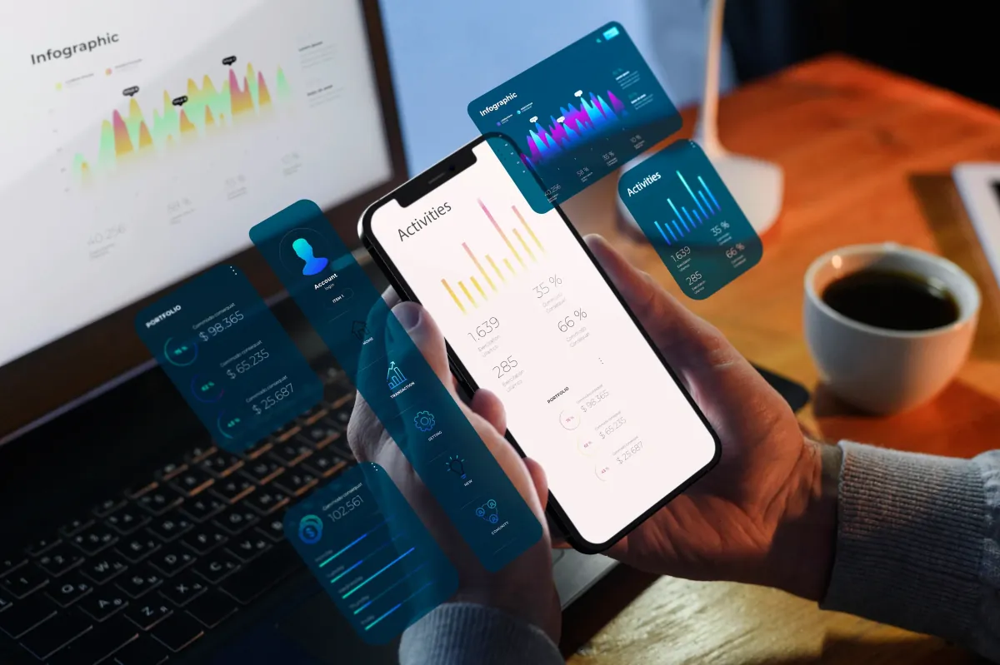

Website Development
React storefront wired to a Node.js core, delivering multi-region inventory sync and full-stack performance budgets.
APP&WEB Development
From concept to deployment, I craft immersive experiences with React, React Native, Next.js, Node, and cloud-native workflows, pairing every sprint with ChatGPT and Gemini.
Manage projects with clarity, speed, and zero friction
Full-cycle orchestration
Portfolio
Delivering standout fintech, marketplace, and creative products, each designed to showcase tangible performance gains.
React storefront wired to a Node.js core, delivering multi-region inventory sync and full-stack performance budgets.

React Native command center focused on buttery-smooth interactions, quick load times, and reliable offline moments.
Agile + Scrum coaching toolkit that keeps sprint rituals, burndowns, and stakeholder updates concise across distributed teams.
Friendly landing pages, on-brand campaigns, and clear reporting loops for every launch.